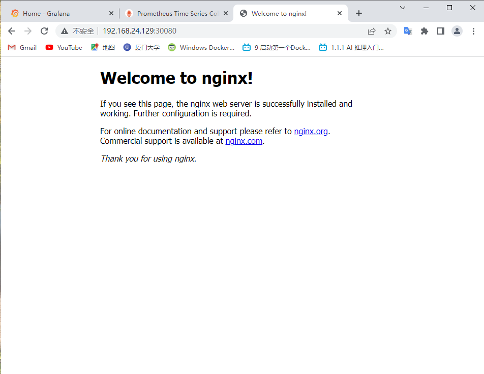

三、使用Kubernetes创建集群
Master节点和Node节点
操作根据 在Ubuntu18.04上搭建kubernetes 上的文档进行操作，在master节点执行完kubeadm之后，出现信息

在从节点上执行
kubeadm join 10.24.83.22:6443 ...
这条命令是有有效期的，需要的时候，可以执行以下命令获取
kubeadm token create --print-join-command
可以查看集群的基本状况：
kubectl get nodes

其中master节点为主机节点，IP为10.24.83.40，node02节点为虚拟机节点，IP为192.168.24.129，可以发现所有的node均已Ready。
1、验收集群
使用以下命令可以创建一个最简单的nginx pod
kubectl apply -f https://k8s.io/examples/pods/simple-pod.yaml
创建后可以发现Pod处于Running状态：

在Node02上，添加-o wide可以查看pod的ip，再使用curl，可以访问这个nginx服务

如无特殊设置，k8s会通过服务器负载均衡自动部署到合适的node节点上，pods的内部IP为192.168.140.65，端口号为80.

2、正式部署NGINX集群
创建deployment
创建nginx-dep.yml部署文件
apiVersion: v1 #核心，对象pod、service等
kind: Pod
metadata: #资源的元数据/属性
name: nginx
labels:
app: nginx
spec: #设置该资源的内容
containers:
- name: nginx
image: nginx:latest
ports:
- containerPort: 80 #容器端口
hostPort: 8081 #让外部访问端口，官方及其不推荐这种方式，走的防火墙iptables方式，本人测试没成功，仍然无法从外部访问。
使用命令kubectl apply创建pod
create：先删除现有的东西，重新根据yaml文件生成新的，无法覆盖
apply：根据配置文件列出来的内容，升级现有的，直接覆盖原来的（建议使用）
可以查看pods的详细信息：
kubectl get pods -o wide

三个pods全部部署在了node02节点上
创建Service
创建nginx-service.yaml文件，内容为：
apiVersion: v1
kind: Service
metadata:
name: nginx-service
spec:
selector:
app: nginx
ports:
- protocol: TCP
port: 80
targetPort: 80
nodePort: 30080 #端口范围只能是 30000-32767，外部通过此端口访问
type: NodePort #nodePort方式，必须声明这类型
通过
kubectl apply -f nginx-service.yml
创建Service服务
查询服务：
kubectl get svc -o wide

可以发现服务能正常启动
测试
浏览器输入节点IP:30080访问
虚拟机的节点为：192.168.24.129

测试完成，这时候正式nginx集群搭建完成。
3、部署Dashboard
Dashboard是官方提供的一个UI，可用于基本管理K8s资源
YAML文件下载地址：
wget https://raw.githubusercontent.com/kubernetes/dashboard/v2.4.0/aio/deploy/recommended.yaml
将Service改成NodePort类型，可以暴露到外部
kind: Service
apiVersion: v1
metadata:
labels:
k8s-app: kubernetes-dashboard
name: kubernetes-dashboard
namespace: kubernetes-dashboard
spec:
ports:
- port: 443
targetPort: 8443
nodePort: 30001
selector:
k8s-app: kubernetes-dashboard
type: NodePort
...
kubectl apply -f recommended.yaml
kubectl get pods -n kubernetes-dashboard
访问地址：https://10.24.83.22:30001
查看状态
kubectl get all -n kubernetes-dashboard
# 创建用户
kubectl create serviceaccount dashboard-admin -n kube-system
# 用户授权
kubectl create clusterrolebinding dashboard-admin --clusterrole=cluster-admin --serviceaccount=kube-system:dashboard-admin
# 获取用户Token
kubectl describe secrets -n kube-system $(kubectl -n kube-system get secret | awk '/dashboard-admin/{print $1}')
使用输出的token登录到Dashboard